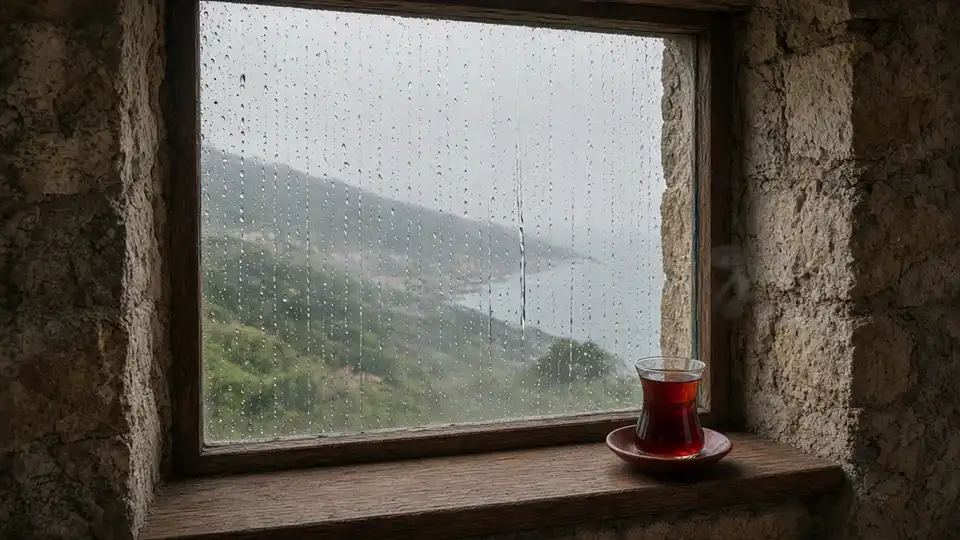
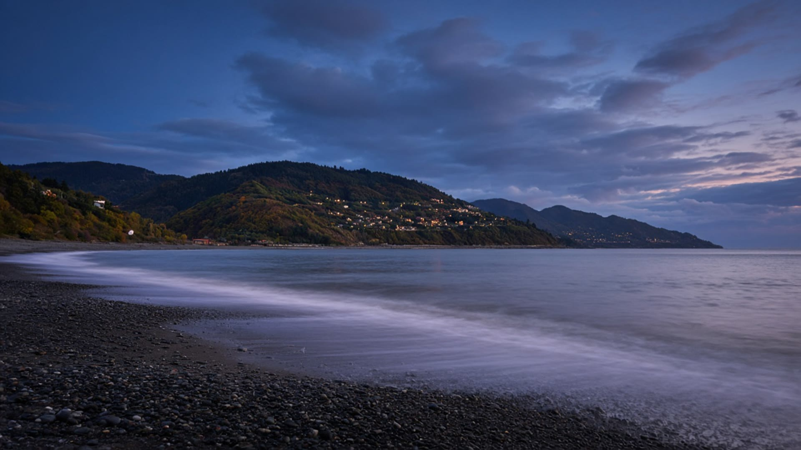
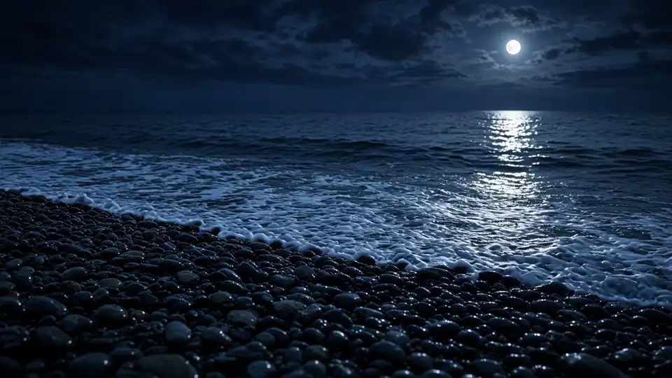
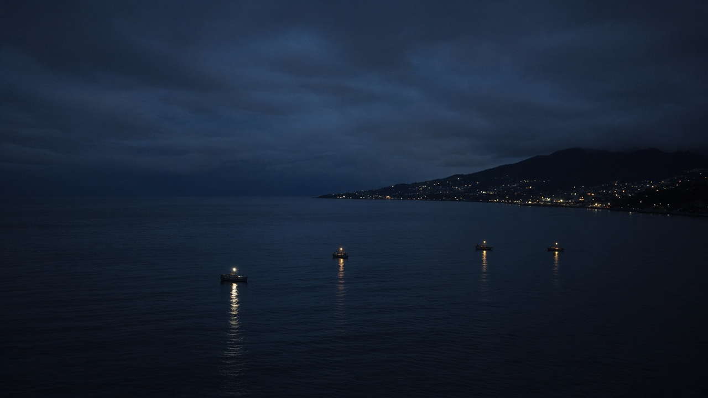

Şerif'in evinde, üç dost bir arada
At Şerif's home, three friends together

Şerif, misafirperverliğin için teşekkürler
Şerif, thank you for your hospitality
Dostluk, en güzel misafirdir
Friendship is the finest guest

Osman, Villa Sadece Sen'i inşa eden dost — teşekkürler
Osman, the friend building Villa Sadece Sen — thank you

Dost kara günde belli olur
A friend is known on a dark day

Bu akşam Çukurçayır'da, Şerif'in evinde: M · Şerif · Osman
Tonight in Çukurçayır, at Şerif's home: M · Şerif · Osman
SADECE
Sen
M · Şerif · Osman